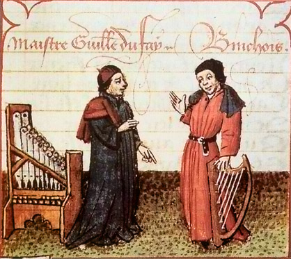

Guillaume Dufay

Copy of a painting by Rogier van der Weyden
Guillaume Dufay (c. 1397–1474) was a Franco-Flemish composer of the Renaissance period.
In 1428, Dufay entered the service of Philip the Good, who was Duke of Burgundy at the time.
Nationality: Franco-Flemish
Location: Born in Brussels, present-day Belgium
Patrons: Dufay's patrons included Pope Eugene IV, Philip the Good, and Cosimo de' Medici.
Filippo Brunelleschi designed and engineered the enormous brick dome that crowns the Florence Cathedral. To celebrate its completion in 1436, Cosimo de' Medici commissioned Dufay to write a special grand motet for the occasion, which became "Nuper rosarum flores."
Contemporaries:
-
Guillaume de Binchois (c. 1400–1460)
Guillaume de Binchois was another prominent composer of the Burgundian School and a close associate of Dufay.
-
Johannes Ockeghem (c. 1410–1497)
Johannes Ockeghem, a Netherlandish composer, was a leading figure of the Franco-Flemish School.
Known for:
- Dufay frequently incorporated secular tunes, such as "L'homme armé" ("The Armed Man"), into his Mass compositions. This practice of integrating popular melodies into sacred contexts was influential and paved the way for later composers to explore similar approaches.
- Dufay is associated with the development of the cyclic Mass, where the movements of the Mass (Kyrie, Gloria, Credo, Sanctus, Agnus Dei) share a common musical theme. This approach provided a unified and cohesive structure to the Mass setting.
Most Influential Works:
- "Nuper rosarum flores" - A motet composed for the dedication of the Florence Cathedral in 1436.
- "Missa Se la face ay pale" - A Mass setting known for its musical beauty and incorporation of secular melodies.
- "Missa L'homme armé" - A famous Mass setting based on the secular tune "L'homme armé."